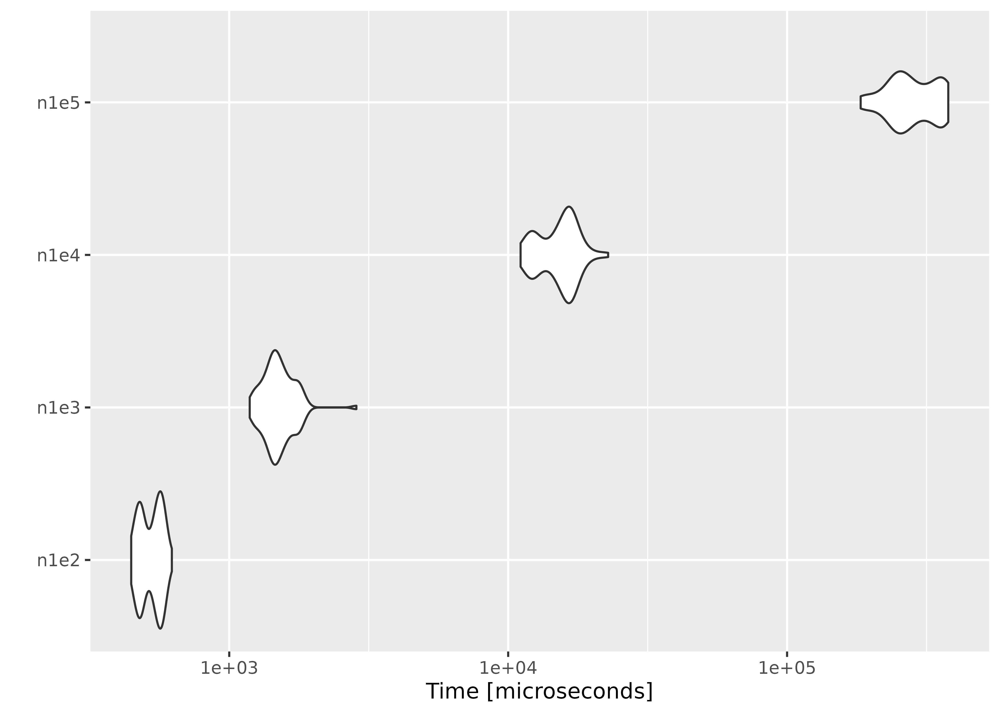

All the tests were done on an Arch Linux x86_64 machine with an Intel(R) Core(TM) i7 CPU (1.90GHz).
Empirical likelihood computation
We show the performance of computing empirical likelihood with el_mean(). We test the computation speed with simulated data sets in two different settings: 1) the number of observations increases with the number of parameters fixed, and 2) the number of parameters increases with the number of observations fixed.
Increasing the number of observations
We fix the number of parameters at \(p = 10\), and simulate the parameter value and \(n \times p\) matrices using rnorm(). In order to ensure convergence with a large \(n\), we set a large threshold value using el_control().
library(ggplot2)
library(microbenchmark)
set.seed(3175775)
p <- 10
par <- rnorm(p, sd = 0.1)
ctrl <- el_control(th = 1e+10)
result <- microbenchmark(
n1e2 = el_mean(matrix(rnorm(100 * p), ncol = p), par = par, control = ctrl),
n1e3 = el_mean(matrix(rnorm(1000 * p), ncol = p), par = par, control = ctrl),
n1e4 = el_mean(matrix(rnorm(10000 * p), ncol = p), par = par, control = ctrl),
n1e5 = el_mean(matrix(rnorm(100000 * p), ncol = p), par = par, control = ctrl)
)Below are the results:
result
#> Unit: microseconds
#> expr min lq mean median uq max neval
#> n1e2 445.160 478.652 525.5844 535.718 568.299 622.650 100
#> n1e3 1184.087 1396.548 1516.4362 1478.139 1614.793 2857.124 100
#> n1e4 11078.852 12806.235 15325.1954 15909.939 16837.216 22825.548 100
#> n1e5 183556.473 243502.615 285467.4688 272455.720 342309.032 378338.511 100
#> cld
#> a
#> a
#> b
#> c
autoplot(result)
Increasing the number of parameters
This time we fix the number of observations at \(n = 1000\), and evaluate empirical likelihood at zero vectors of different sizes.
n <- 1000
result2 <- microbenchmark(
p5 = el_mean(matrix(rnorm(n * 5), ncol = 5),
par = rep(0, 5),
control = ctrl
),
p25 = el_mean(matrix(rnorm(n * 25), ncol = 25),
par = rep(0, 25),
control = ctrl
),
p100 = el_mean(matrix(rnorm(n * 100), ncol = 100),
par = rep(0, 100),
control = ctrl
),
p400 = el_mean(matrix(rnorm(n * 400), ncol = 400),
par = rep(0, 400),
control = ctrl
)
)
result2
#> Unit: microseconds
#> expr min lq mean median uq max
#> p5 721.074 776.171 816.4019 814.1165 864.8715 932.247
#> p25 2726.701 2816.723 2987.0153 2908.5795 2994.5195 5914.400
#> p100 21549.230 24102.478 26458.3736 24573.6605 29323.7160 44989.644
#> p400 240368.746 265741.816 301376.2647 287057.8875 333204.2220 443192.645
#> neval cld
#> 100 a
#> 100 a
#> 100 b
#> 100 c
autoplot(result2)On average, evaluating empirical likelihood with a 100000×10 or 1000×400 matrix at a parameter value satisfying the convex hull constraint takes less than a second.